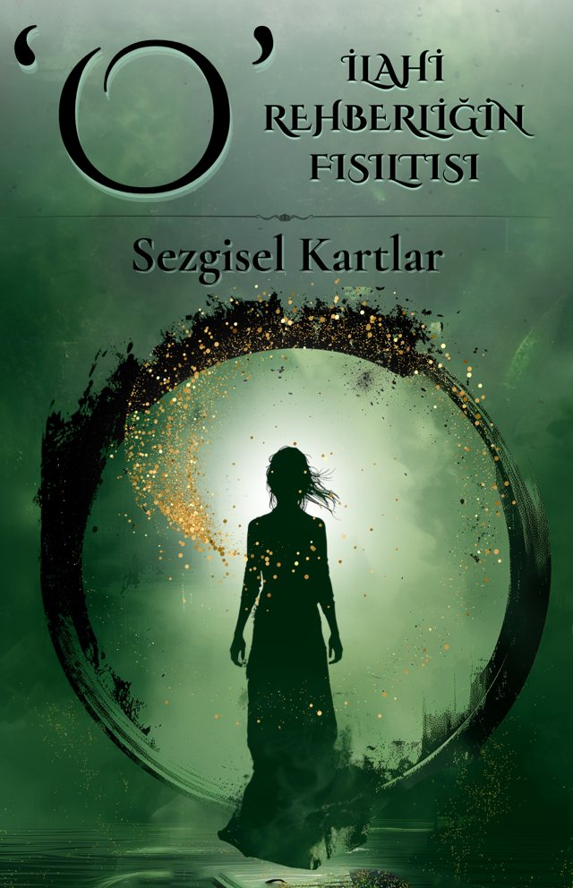

Her kart bir mesaj,
her mesaj bir ışık.
Sevgili Ruh Yolcusu
Hayat bazen bizleri kendi içsel rehberliğimizden uzaklaştırabilir. Günlük koşuşturmaların arasında, iç sesimizi duymak zorlaşabilir. İşte bu kartlar, tam da böyle anlarda size yol göstermek için burada. ‘O’ – İlahi Rehberliğin Fısıltısı Sezgisel Kartları, sizin için bir rehber, bir destek, bir dost olacak. Her bir kart, ilahi rehberlikle size sunulmuş mesajlar içeriyor ve ruhsal yolculuğunuzda size ışık tutuyor.
Bu sezgisel kartlar, sizi içsel huzura ve dengede olmaya davet ediyor. Kartlar; ilham verici mesajlarıyla hayatınızdaki çeşitli zorluklara, duygusal çıkmazlara ve karar anlarına yönelik sizi destekliyor. Her kartın enerjisi, sizi kendi iç bilginize yönlendirecek, içinizde zaten var olan gücü uyandıracak.
Kartların size sunacakları
İçsel Rehberlik ve Bilgelik
Bu kartlar, içsel rehberliğinizi güçlendirip sezgilerinizi daha iyi duymanızı sağlar. Her gün aldığınız rehberlikle kendinizi daha güçlü, daha dengeli hissedeceksiniz.
Enerjisel Şifa ve Denge
Kartların enerjisi, sizin enerjinizi temizleyip yenileyerek, zihinsel ve duygusal dengeyi sağlamakta yardımcı olur.
İlham ve Yaratıcılığı Besler
Kartlardaki her bir mesaj, yeni fikirler ve ilham dolu çözümler bulmanıza destek olur. Yaratıcı projelerinize yön verebilir ve yaşamınıza renk katabilir.